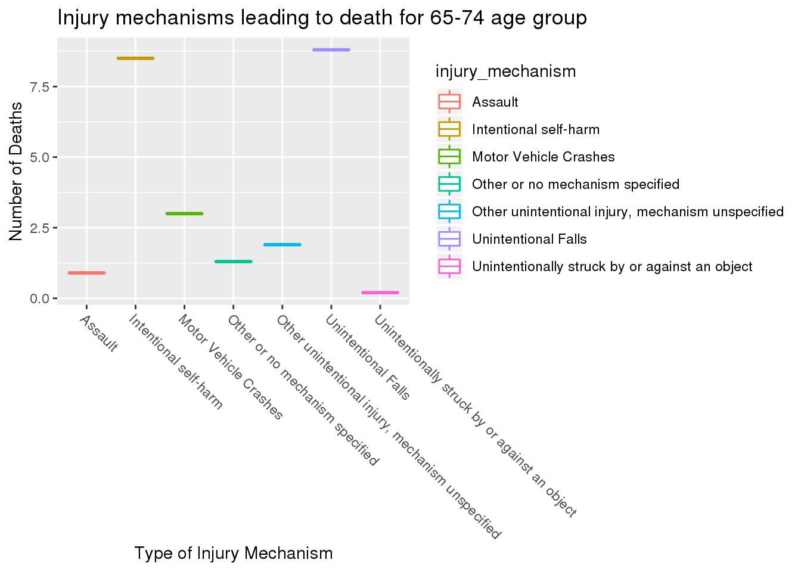
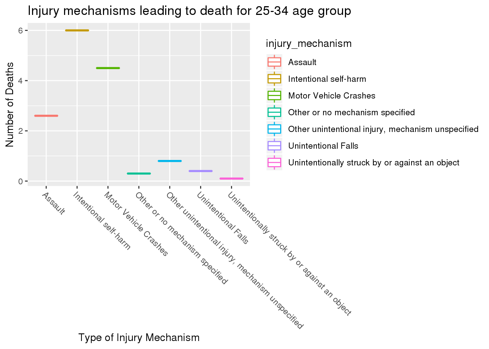

library(tidyverse)
library(tinytex)
dat<- read_csv(here::here("data", "tidytuesday", "data", "2020", "2020-03-24", "tbi_age.csv"
))
dat1<- read_csv(here::here("data", "tidytuesday", "data", "2020", "2020-03-24", "tbi_year.csv"
))
dat2<- read_csv(here::here("data", "tidytuesday", "data", "2020", "2020-03-24", "tbi_military.csv"
))
Traumatic Brain Injury
For this project, I am examining traumatic brain injuries (TBI) within the data set tbi_age.csv file from the Tidy Tuesday website. The data set has 216 observations of 5 variables. The variable age_group is a factor of 231 levels that represents the age groups of victims of TBI. The variable type is a factor of 231 levels that represents the where the victim went to treat their injury, or the effect of the injury. The variable injury_mechanism is a factor of 231 levels that represents how the victim obtained their injury. The variable number_set is a factor of 231 levels that represents the estimated observed cases in 2014.The variable rate_est is a factor of 231 levels that represents the where the victim went to treat their injury.
With the second, tbi_year.csv data set from the Tidy Tuesday website it further examines these injuries. The data set has 216 observations of 5 variables. The variable injury_mechanism is a factor of 216 levels that represents how the injuries were received. The variable type is a factor of 216 levels that represents went to treat their injury, or the effect of the injury. The variable year is a factor of 216 levels that represents the year of the injury. The variable rate_est is a factor of 216 levels that rate/100,000 in 2014. The variable number_est is a factor of 216 levels that represents estimated observed cases in each year.
The last data set, tbi_military.csv from Tidy Tuesday specifically delves into brain injuries from military personnel. The data set has 450 observations and 5 variables. The variable service is a factor of 450 levels that represents the military branch of the victim’s branch. The variable component is a factor of 450 levels that represents whether the victim is active, guard, or reserve). The variable type is a severity of 450 levels that represents the severity of the injury. The variable diagnosed is a factor of 450 levels that represents the number of diagnoses per year. The variable year is a factor of 450 levels that represents year the injury was observed.
glimpse(dat)
## Observations: 231
## Variables: 5
## $ age_group <chr> "0-17", "0-17", "0-17", "0-17", "0-17", "0-17", "0-1…
## $ type <chr> "Emergency Department Visit", "Emergency Department …
## $ injury_mechanism <chr> "Motor Vehicle Crashes", "Unintentional Falls", "Uni…
## $ number_est <dbl> 47138, 397190, 229236, 55785, NA, 24360, 57983, 5464…
## $ rate_est <dbl> 64.1, 539.8, 311.6, 75.8, NA, 33.1, 78.8, 27.5, 1161…
Question 1
What age group is most likely to receive a traumatic brain injury from which injury mechanism?
To determine this relationship, I will examine a graph relating the age groups to the different injury mechanisms. As well, I want to observe this in a box plot, allowing easy observation over the median, minimum, and maximum ages these injury mechanisms occur.
library(ggplot2)
ggplot(data =dat)+
geom_point(mapping = aes(x = age_group, y = rate_est, color = injury_mechanism ))+
xlab("Age Group") +
ylab("Number of Injuries") +
theme(axis.text.x = element_text(angle =- 45, hjust = 0))+
ggtitle("Most common injurt mechanisms per age group")
## Warning: Removed 11 rows containing missing values (geom_point).

ggplot(data =dat)+
geom_point(mapping = aes(x = age_group, y = number_est, color = injury_mechanism ))+
xlab("Age Group") +
ylab("Number of Injuries") +
theme(axis.text.x = element_text(angle =- 45, hjust = 0))+
ggtitle("Most common injurt mechanisms per age group")
## Warning: Removed 11 rows containing missing values (geom_point).
# Analysis
Unintentional falls is one of the most substantial injury mechanisms in the data, with it being the greatest reason for almost all the age groups, and being the greatest out of the total group by a large margin. Next most prominent injury mechanism is being unintentionally struck by or against an object, being the second largest for the most of the age groups as well. From this, it appears that there is no correlation between the different types of injury mechanism and the different age groups.
glimpse(dat2)
## Observations: 450
## Variables: 5
## $ service <chr> "Army", "Army", "Army", "Army", "Army", "Army", "Army", "Ar…
## $ component <chr> "Active", "Active", "Active", "Active", "Active", "Guard", …
## $ severity <chr> "Penetrating", "Severe", "Moderate", "Mild", "Not Classifia…
## $ diagnosed <dbl> 189, 102, 709, 5896, 122, 33, 26, 177, 1332, 29, 12, 11, 63…
## $ year <dbl> 2006, 2006, 2006, 2006, 2006, 2006, 2006, 2006, 2006, 2006,…
Question 2
As the prevalence of TBI has increased in the military branches, has there been any decrease in the amount of concussions diagnosed throughout the years? If not, has severity at least lessened throughout the years?
To determine, I will generate a graph to visualize the number of diagnosed and year of diagnoses, as well as a visualization of the severity of the TBI compared to the year of diagnoses
ggplot(data = dat2)+
geom_boxplot(mapping = aes(y = diagnosed, x = factor(year) , color = service))+
ylab("number of diagnoses") +
xlab("year") +
facet_wrap(~ severity, scale = "free")+
theme(axis.text.x = element_text(angle =- 45, hjust = 0))+
ggtitle("Number of diagnoses compared to its severity per year")
## Warning: Removed 12 rows containing non-finite values (stat_boxplot).
 # Analysis
# Analysis
Of the brain injuries, there is not much to very little change in the data as years progress for the different levels of severity. The graph above makes it apparent that the Army Branch has the widest range of all types of severity throughout all the years. However, the mild and moderate concussions are much more substantial than the not classifiable, penetrating, severe types of concussions. All the other branches remain relatively constant maintaining few TBIs and maintaining approximately the same amount each year. A positive to mention about the data, is that the more severe and penetrating TBIs have decreased in the most recent years for the Army branch, so there has been some improvement for the military.
ggplot(data = dat2)+
geom_boxplot(mapping = aes(y = diagnosed, x = factor(year) , color = service))+
ggtitle("Number of diagnoses per branch memebrship compared each year")+
ylab("Number of Diagnosis")+
xlab("Year Diagnosed")
## Warning: Removed 12 rows containing non-finite values (stat_boxplot).
 # Analysis
# Analysis
This is another graph depicting the amount diagnosed per year throughout the military. Again, the Army has way more cases each year than any other branch in the military. Again, the number of cases do not change much as time progresses. Analyzing the Army branch box plot, they have significantly more cases than any of the other branches, better analyzed in the first graph for question 2.
##Question 3
Throughout the different data sets, are deaths from TBI severity based?
To determine, I will create a graphic between the type or severity of the TBI to the deaths for the two data sets that have such data available.
graph1<-filter(dat1, type %in% c("Deaths" ))%>%
ggplot(aes(y = number_est,x= type, color = type))+
geom_boxplot(mapping = aes(y= number_est, x= injury_mechanism, color = type))+
theme(axis.text.x = element_text(angle =- 45, hjust = 0))+
xlab("Type of Injury Mechanism") +
ylab("Number of Deaths") +
ggtitle("Injury mechanism leading to Deaths")
graph1
## Warning: Removed 9 rows containing non-finite values (stat_boxplot).
filter(dat, type %in% c("Deaths" ))%>%
ggplot(aes( x= type ,y= rate_est, color = type))+
geom_boxplot(mapping = aes(x = injury_mechanism, y= rate_est, color = type))+
theme(axis.text.x = element_text(angle =- 45, hjust = 0))+
xlab("Type of Injury Mechanism") +
ylab("Number of Deaths") +
ggtitle("Injury mechanisms leading to death")
## Warning: Removed 3 rows containing non-finite values (stat_boxplot).
 # Analysis
# Analysis
The two graphs above show the rates of death for the different TBI mechanisms for the two different variables that had type = “Death” as an observation. The first graph, from the tbi_age.csv, clearly identifies intentional self harm as the most deadly TBI mechanism, its median being substantially higher than any other mechanism. The second and third most deadly appeared to be unintentional falls and motor vehicle crashes respectively. Following the data set tbi_year.csv, similar data was collected, just on a smaller scale. The three deadliest from the first graph remained the deadliest on this data set, with the intentional self harm’s median being greater than all the other mechanisms. And like the other data set, had unintentional falls and motor vehicle crashes as the following mechanisms.
I wanted to look further into the most common death’s from TBI compared by age group so I continued with this question, comparing the two oldest age groups to some of the two youngest age groups. The following are my observations:
graph2<-filter(dat, type %in% c("Deaths" ))%>%
filter(age_group == c("75+"))%>%
ggplot(aes( x= type ,y= rate_est, color = injury_mechanism))+
geom_boxplot(mapping = aes(x = injury_mechanism, y= rate_est, color = injury_mechanism))+
theme(axis.text.x = element_text(angle =- 45, hjust = 0))+
ylab("Type of Injury Mechanism") +
xlab("Number of Deaths") +
ggtitle("Injury mechanisms leading to death")
graph2

graph3<-filter(dat, type %in% c("Deaths" ))%>%
filter(age_group == c("65-74"))%>%
ggplot(aes( x= type ,y= rate_est, color = injury_mechanism))+
geom_boxplot(mapping = aes(x = injury_mechanism, y= rate_est, color = injury_mechanism))+
theme(axis.text.x = element_text(angle =- 45, hjust = 0))+
ylab("Type of Injury Mechanism") +
xlab("Number of Deaths") +
ggtitle("Injury mechanisms leading to death")
graph3

graph4<-filter(dat, type %in% c("Deaths" ))%>%
filter(age_group == c("0-17"))%>%
ggplot(aes( x= type ,y= rate_est, color = injury_mechanism))+
geom_boxplot(mapping = aes(x = injury_mechanism, y= rate_est, color = injury_mechanism))+
theme(axis.text.x = element_text(angle =- 45, hjust = 0))+
ylab("Type of Injury Mechanism") +
xlab("Number of Deaths") +
ggtitle("Injury mechanisms leading to death")
graph4
## Warning: Removed 1 rows containing non-finite values (stat_boxplot).

graph5<-filter(dat, type %in% c("Deaths" ))%>%
filter(age_group == c("25-34"))%>%
ggplot(aes( x= type ,y= rate_est, color = injury_mechanism))+
geom_boxplot(mapping = aes(x = injury_mechanism, y= rate_est, color = injury_mechanism))+
theme(axis.text.x = element_text(angle =- 45, hjust = 0))+
ylab("Type of Injury Mechanism") +
xlab("Number of Deaths") +
ggtitle("Injury mechanisms leading to death")
graph5

# Analysis
I was happy to see that each age group presented very different data and it was apparent which mechanisms were the most deadly in each age group. I was originally curious about this when I analyzed the data of all the age groups combined (the first graph of question 3) and it showed unintentional falls as one of the most deadly. It is unlikely that a younger individual would die from an unintentional fall, but it is a very common way to pass as a senior citizen. Both of the two oldest age groups has unintentional falls as the most common death.The 0-17 graph and 25-34 graph share the 3 most common most deadly mechanisms, but the data for the 0-17 does not include any intentional self-harm, most likely for legality reasons. However, neither display the death rate for unintentional falls as the highest, like how the oldest age groups did.
Conclusion
Traumatic Brain Injuries can effect anyone in any walk of life, and can be obtained by doing almost anything. Unintentional falls appeared to be the most common way to receive a concussion, but only appeared to be deadly for older age groups.
With the data expressed in question 2, what should the Military’s response be to help better protect the troops? Research for TBI is very recent, so it is understandable why the numbers are still high in 2014, but there are still more precautionary measures that can be taken up to maintain proper mental health for the Army. A suggestion could be to increase the padding in Army helmets comparable to football helmets. Also giving extended time off to allow for full recovery after receiving a TBI. Lastly, educate the branch on the symptoms, the ways one could be received, and the overall effect of TBIs so they can self diagnose themselves if they feel they have received one.
TBIs are very serious as they affect the individual long after the initial concussion. Personally, I have had 3 concussions from my years of playing soccer and still face challenges though I got my last one almost a year ago. I will continue to look more into data posted about TBIs as more become readily available.